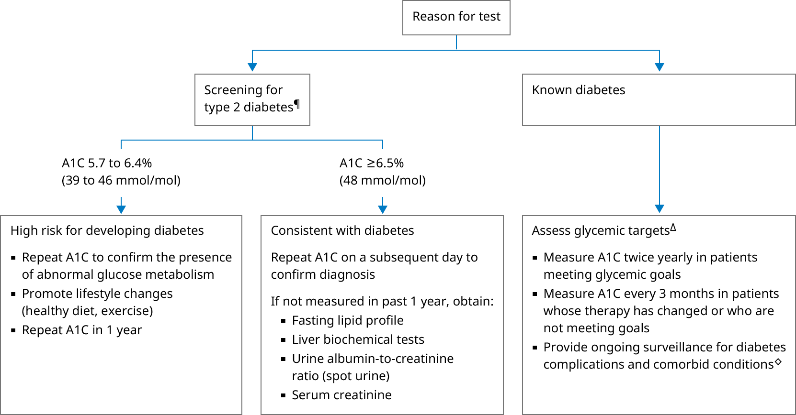

* The normal range for A1C is typically 4 to 5.6%. Interpretation of a specific abnormal test result should be based upon the reference range reported with that result.
¶ A1C should be interpreted with caution in certain populations, as there are biologic and patient-specific factors that may cause misleading results (eg, abnormal red cell turnover, abnormal hemoglobins, advanced chronic kidney disease treated with erythropoietin). The National Glycohemoglobin Standardization Program website contains current information about substances that interfere with A1C test results.
Δ Target A1C levels in patients with diabetes should be tailored to the individual, balancing the improvement in microvascular complications with the risk of hypoglycemia. A reasonable goal of therapy might be an A1C value of ≤7% for most nonpregnant patients. Glycemic targets are generally set somewhat higher (eg, <8%) for older adult patients and those with comorbidities or a limited life expectancy and little likelihood of benefit from intensive therapy. More stringent control (A1C <6%) may be indicated for individual patients with type 1 diabetes and during pregnancy.
◊ Comorbid conditions may include obesity, hypertension, dyslipidemia, sleep apnea, fatty liver disease, periodontal disease, depression, cognitive impairment, hearing impairment, and fractures.